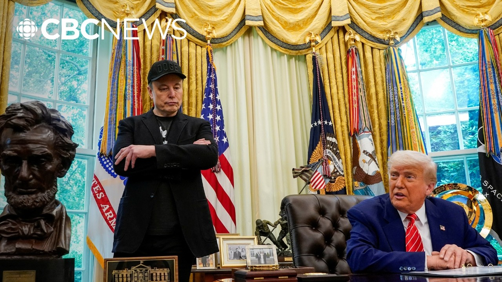

【埃隆·马斯克卸任特朗普高级顾问】
Summary: Elon Musk discusses his advisory role with Trump, the controversial government efficiency department, and the underperformance of promised budget cuts, while analysts reflect on the optics and impact of his departure.
摘要： 埃隆·马斯克谈及与特朗普的顾问关系、争议性的政府效率部门以及承诺预算削减的未达标表现，分析人士则对其离职的影响和表象进行了反思。

⏱️ Estimated Reading Time: 14 min
Uh well, I expect to continue to provide advice whenever the president would like advice.
呃，我预计会继续在总统需要建议时提供建议。
I hope so.
我希望如此。
I mean, I'm uh yeah, it's I expect to remain a friend and uh an adviser and uh certainly if there's anything the president wants me to do, I'm at at the president's office.
我的意思是，呃，是的，我预计会继续作为朋友和顾问，当然如果总统有任何需要我做的事，我随时在总统办公室待命。
Mr. to the US President Donald Trump as well as Elon Musk who is leaving as his role as a special government employee for uh the controversial department of government efficiency uh and saying uh we heard Donald Trump there thanking uh Elon Musk uh for doing uh the work in cutting uh many government jobs and services um excuse me and uh saying that the US is the hottest country in the world right now.
美国总统唐纳德·特朗普以及埃隆·马斯克——他正卸任政府效率部门这一争议性机构的特殊政府雇员职务——我们听到特朗普感谢马斯克在削减政府职位和服务方面的工作，呃，抱歉，他还提到美国现在是世界上最热门的国家。
Uh and also applauding uh the decision by an appeal court to allow for uh the tariffs on much of the world to stay in place following a lower court uh uh saying that the tariffs, many of the tariffs that Donald Trump has imposed on the world are illegal.
呃，他还对上诉法院允许大部分全球关税维持原判的决定表示赞赏，此前下级法院裁定特朗普实施的许多关税是非法的。
The CBC's Aaron Collins has been following the story from Washington.
CBC的亚伦·柯林斯一直在华盛顿跟进此事。
He joins me now.
他现在加入我们的讨论。
So Aaron, just your your takeaway there.
那么亚伦，请谈谈你的看法。
Well, Andrew, I mean, look, they covered a lot of ground there, so it's hard to know where to start.
呃，安德鲁，你看，他们涉及了很多内容，所以很难从何说起。
But if we if we sort of stick to the topic of the day, which was um uh you know, the end of Elon Musk's employment essentially as the head of Doge.
但如果我们紧扣今天的主题，也就是埃隆·马斯克作为Doge负责人职务的结束。
This struck me a little bit like watching uh you know, a big band that was playing their last show together.
这让我感觉有点像观看一支大乐队的最后一场演出。
You saw them, you know, playing all the greatest hits.
你知道，他们演奏了所有最热门的曲目。
They're talking about transgender ideology and the economy and waste and the greatest military and uh you know speaking about the beauty of the Oval Office.
他们谈论跨性别意识形态、经济、浪费、最强大的军队，呃，还谈到椭圆形办公室的美。
You had Elon Musk in in his sort of dark MAGA outfit and the the president perched behind the desk.
埃隆·马斯克穿着深色MAGA风格服装，总统则坐在办公桌后。
It really felt like they were trying to revisit the old times, right?
真的感觉他们是在试图重温旧时光，对吧？
But this is a relationship that's not where it was, right?
但这段关系已今非昔比，对吧？
when when Elon Musk was signing a lot of checks to help get the president elected and and when he the beginning of this you know you you heard the president sort of throwing out random numbers million dollars here hund00 million there I mean we don't have time to fact check these things in real time but what we do know is that the initial ask the initial promise here from Elon Musk was initially $2 trillion in cuts that went down to $1 million in cuts on the Doge website I just checked it's 175 or sorry trillion It's $175 billion in actual cuts.
当初马斯克签署大量支票帮助总统当选时，以及一开始你听到总统随意抛出数字——这里几百万那里几亿——我们没时间实时核实，但我们知道马斯克最初承诺削减2万亿美元，后来在Doge网站上降到1万亿美元，我刚查了实际削减是1750亿美元。
So way way less.
所以远远少于承诺。
And then you heard Elon Musk there use the number $160 uh billion.
然后你听到马斯克提到1600亿美元。
So this is a you know an initiative that's dramatically underperformed I think by any metric.
所以这是一项无论从哪方面看都严重未达预期的计划。
And um you know in the meantime Elon Musk has been um the target of attacks from protesters.
同时，马斯克一直是抗议者攻击的目标。
He hasn't been a popular figure.
他并不受欢迎。
I I don't think he's been great for this president.
我认为他对这位总统并不利。
uh public opinion polls would tell you that he's the probably the least popular part of this administration.
民调会告诉你他可能是这届政府中最不受欢迎的人物。
So, you know, in a lot of ways, it was time for him to go.
所以从很多方面看，他该走了。
And on top of that, his businesses probably need him at the helm and not uh and not dabbling in in in government administration.
此外，他的企业可能需要他掌舵，而不是涉足政府管理。
So, you add it all up and it did feel like sort of an awkward breakup.
综合来看，这确实像一场尴尬的分手。
Um they're trying to leave on good terms.
他们试图好聚好散。
You you you heard both the president and Elon Musk say that, hey, these these uh amounts of savings, they're they're not where we wanted them, but they're going to go up.
你听到总统和马斯克都说，这些节省的金额虽未达预期，但会增长。
They're going to keep, you know, they're going to keep growing over time.
你知道，它们会随时间持续增长。
And I guess only time will tell.
我想只有时间能证明。
Uh they certainly haven't delivered what they promised initially.
他们显然未兑现最初的承诺。
Aaron, thank you.
亚伦，谢谢。
The CBC's Aaron Collins.
CBC的亚伦·柯林斯。
So for more on this, we've reached Chris Galeri.
为此我们联系了克里斯·加莱里。
He is a professor of political science at St. Anselm College and he joins us from Concord in New Hampshire.
他是圣安塞尔姆学院政治学教授，从新罕布什尔州康科德加入我们。
Chris, nice to see you.
克里斯，很高兴见到你。
Thanks for taking the time.
感谢抽空。
Glad to be here, Andrew.
安德鲁，很高兴来这儿。
Thank you.
谢谢。
So what stood out to you in terms of uh the optics of it?
那么从表象上看，你觉得什么最突出？
Uh you know, is this sort of a a bad breakup?
这是不是一种糟糕的分手？
Um, and what did Doge accomplish or not accomplish?
Doge取得了什么或未取得什么？
Sure.
当然。
Um, in terms of the optics, um, I think this is exactly that.
从表象看，我认为正是如此。
It is a breakup.
这是一场分手。
Uh, they're putting a good face on it, I guess, for the sake of the children or the country as it were.
他们装出好聚好散的样子，大概是为了国家或民众。
Uh, but this is clearly an initiative that did not deliver um on what was promised.
但这显然是一项未兑现承诺的计划。
Um, the cuts are have been far smaller uh than were promised.
削减幅度远小于承诺。
Um, and the cuts that were made uh were very haphazard, very chaotic.
而且削减非常随意混乱。
Uh think back to uh January and February.
回想1月和2月。
How many times we would hear that thousands of employees from this or that government agency had been fired or let go only to uh get calls the next week asking them to come back to the office because it turned out their jobs were important.
多少次我们听说某政府机构数千员工被解雇，结果下周又接到电话要求他们回来，因为他们的工作很重要。
Um, I think what we've seen here is, uh, what happens when you have folks who think that the work of government is fundamentally not important, is fundamentally, uh, not serious, is inherently inefficient, uh, in countering the reality that agencies like the Social Security Administration um, are actually run pretty well.
我认为我们看到的是，当一些人认为政府工作根本不重要、不严肃、效率低下时会发生什么，而现实是像社保局这样的机构其实运行良好。
uh agencies like the Veterans Affairs uh administration uh are by no means perfect but uh tend to do their jobs pretty well and are full of people who want to do uh good jobs uh in service of the public interest.
退伍军人事务局等机构虽不完美，但往往表现不错，且充满想为公共利益服务的人。
Do you think Doge is going to continue or uh was this just some nice words uh from the US president as the midterms get closer?
你认为Doge会继续，还是这只是总统在中期选举临近时的漂亮话？
Is this kind of just going to kind of go away?
这是不是会逐渐消失？
Um my guess is that it is going to recede into the background without somebody like Musk uh who's such a visible figure um heading it up.
我猜没有马斯克这样显赫的人物领导，它会逐渐淡出。
Uh there's you know note that there's been no real uh announcement of a replacement.
注意目前没有真正的接替者宣布。
Uh and any replacement wouldn't have uh the public profile of Musk who is um among other things the richest person in the world.
任何接替者都不会有马斯克那样的公众形象——他是世界首富。
Um there's been no new uh successor.
没有新继任者。
There's no um announcement of who's taking the reigns or anything like that.
没有宣布谁将接手。
So my guess is that while something called Doge might continue to exist in some form, I don't think it will have the same sort of scope and influence that it's had in the first months of the second Trump administration.
所以我猜虽然Doge可能以某种形式存在，但不会像特朗普第二届政府初期那样有影响力和规模。
He may be the richest person in the world, but Elon Musk not very popular.
他可能是世界首富，但埃隆·马斯克并不受欢迎。
What's your sense of that?
你怎么看？
Yeah, that's correct.
是的，确实如此。
Um, you know, Musk is um a very unusual character.
马斯克是个非常不寻常的人物。
Um, you know, he has alienated a lot of his core customers.
他疏远了很多核心客户。
Um, if you think back to, uh, you know, Tesla, uh, those are electric cars.
回想特斯拉电动车。
Most of the folks who bought Teslas and own Teslas are probably folks who tended to vote for folks like Barack Obama and Joe Biden and Kla Harris in the last few elections.
大多数特斯拉车主可能在最近选举中投票给奥巴马、拜登和哈里斯。
Uh, those folks are very angry with Musk for his role in the Trump administration.
这些人对马斯克在特朗普政府中的角色非常愤怒。
So, I think, you know, he's going back to a business empire.
所以我认为他将回到一个已今非昔比的商业帝国。
Uh, that is not what it was.
特斯拉有很多公关工作要做。
I think Tesla has a lot of public relations work to do.
他在海外也受到打击。
I think uh you know he's taken blows overseas uh in countries that have been hurt by some of these cuts to for instance um US foreign aid programs.
比如受美国外援计划削减影响的国家。
So I think you know Musk has really got to um either focus on his business empire or uh figure out a new way to approach politics because what he's done there has not been working for him.
所以马斯克要么专注商业帝国，要么找到新的政治方式，因为目前的做法对他无效。
Uh can I ask you on another topic that Trump brought up uh and that is tariffs uh saying that he is happy that his tariffs will be able to stay in place following this lower court that said that they were illegal uh in this appeal process that uh they can stay in place.
我能问另一个特朗普提到的话题吗？即他对关税能维持现状感到高兴，此前下级法院裁定其非法，但上诉期间可维持。
Where do you make of where that is all going?
你认为这会如何发展？
Well, I think what we're going to see is an appeals hearing uh to determine the merits of uh the case for and against uh these tariffs.
我认为我们将看到上诉听证会来决定这些关税的利弊。
Uh and you know I I think you know what we've seen is that the tariffs are very unpopular.
我们知道关税非常不受欢迎。
Um the courts as much as we'd like to think they are not uh considering things like their impact on the economy and are going to rule strictly on the black letter of the law.
尽管我们希望法院不考虑经济影响，但他们会严格依法裁决。
Um I think they are going to be extremely reluctant to uphold these.
我认为法院会极不情愿维持这些关税。
You know that lower court decision was um a panel that involved a Reagan judge, an Obama judge, and a Trump judge, I believe.
下级法院的裁决小组包括里根、奥巴马和特朗普任命的法官。
So, it's not exactly uh like he drew a uh a panel of very liberal anti-Trump judges.
所以这不是一群非常自由派的反特朗普法官。
You know, these are folks who come from a variety of backgrounds and thought that the law does not support Trump's argument for these.
这些背景多样的法官认为法律不支持特朗普的论点。
So, I think, you know, right now the whole trade war is sort of uh hanging by thread and I think it's anybody's guess what will happen if the appeals court ultimately winds up ruling against it.
所以目前整个贸易战岌岌可危，如果上诉法院最终反对，结果难料。
Chris, good to see you.
克里斯，很高兴见到你。
Thank you.
谢谢。
Chris Galeri, professor of political science at St. Anselm College.
圣安塞尔姆学院政治学教授克里斯·加莱里。
[Music]
[音乐]